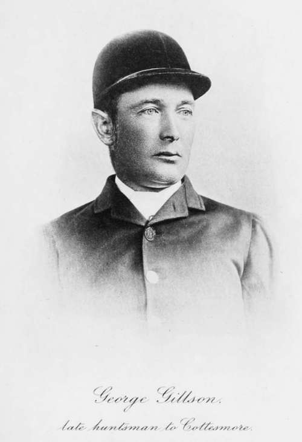

Chapter II. The Hound
Description
This section is from the book "Hunting: A Manual of Fox, Hare, Stag & Otter Hunting", by J. Otho Paget. Also available from Amazon: Hunting: A Manual of Fox, Hare, Stag & Otter Hunting.
Chapter II. The Hound
Without wishing to detract from the merits of any other form of hunting, I must give precedence to the chase of the fox. Not because it is the most popular—though of that I suppose there is no doubt—but because it ranks the highest in my estimation, and I consider it all round to be the finest sport in the world. I will not even pretend that I think the question admits of any argument, for to me fox-hunting is first and everything else is second. Here I stand confessed at the beginning of the chapter, and if you do not approve of my sentiments, I advise you to close the book now before your mind becomes poisoned. There is something wildly exciting in the hunt of a fox, that is quite unknown to a hare-hunter. What it is I don't pretend to say. There is such a varmint sporting look about the animal, that the mere sight of him sends a thrill down your spine. Now, the hare does not have this effect on you, and you feel inclined to pity her, whereas the fox seems so well able to take care of himself, we never think of pitying him. Besides, it seems the natural justice of Providence that a fox should be hunted, for he lives by hunting other animals, and should therefore die by the same means.
The history of fox-hunting is comparatively modern, at least in the sense which we know it now. One Thomas Fownes, a former owner of Beckford's home, was, I believe, the first man who kept a pack exclusively for hunting the fox, which would be somewhere about the beginning of the eighteenth century. His pack was sold to a Mr. Bowes in Yorkshire, and I imagine there are few kennels that do not owe something to this breeder, though all direct trace is lost of his hounds. By the middle of the century the movement had spread, and there were several packs then kept solely for fox-hunting. The Belvoir and the Brocklesby were fashioning the material they already had in their kennels, whilst Maynell and Beckford were building up packs from different sources with science and judgment. When we read how it was possible to get together in a very few years an excellent pack of fox-hounds, one marvels how it was done and where the material came from. Though no hound had been devoted solely to the fox and no regular packs were in existence as they are now, nearly every nobleman and landed proprietor kept what were called buck-hounds, with which they hunted deer, hare, fox, marten-cat, and anything that would show sport. Each owner of hounds went a-hunt-ing whenever it pleased himself and guests. At Belvoir, Badminton, and other large houses, those buck-hounds had probably been bred with care for a great many years, and were handed down to successive generations as family heirlooms, but as they were not confined to hunting one particular animal, the object for which they were to be bred was not very clearly defined. The consequence of this was that the individual who had charge of the kennel bred the hounds in the direction to which his own tastes pointed : thus one preferred the deer, another the fox, and a third the timid hare. At the beginning of the eighteenth century there were four distinct types of hounds that still retained their own individual characteristics. Each kind of hound owed something to the other for a certain excellence, and there is no doubt they were occasionally crossed in the hope of grafting on some good quality. In spite of this crossing of the breeds we can trace the virtues and vices of each sort in its descendants to-day.
The buck-hound resembled the fox-hound as we know him now, and like him was able to adapt himself to hunting any description of animal, but always excelled in the pursuit of vermin. There are few packs of otter-hounds that do not include at least three or four couple of draft fox-hounds, and once entered they impart a spirit into the hunt which seals the death of many an otter. Two hundred years ago the buck-hound was the best all-round for hunting, and therefore more attention was paid to his breeding, the result being the fox-hound, which to-day is the most perfect animal of the dog species in existence. Pay a visit to the annual show at Peterboro', and if you have not ever seen a hound before, you will be struck at once with the symmetry and strength of the exhibits ; but you must then remember, in the breeding of the animal before you, looks have only been a secondary consideration, so that you can appreciate the trouble that has been expended in bringing the hound to its present perfection.
Besides the buck-hound there was the southern-hound, the fox-beagle, and the little blue-mottled beagle. The southern-hound had been bred for nose and nose alone, so that in time he became an animal of very keen scenting powers, but of hideous proportion, and is now practically extinct. The blood-hound is undoubtedly a very near relation, and the American fox-hound that still hunts the fox in Kentucky is probably descended from southern-hounds which accompanied the pilgrims in the Mayflower. The old southerner had his good points, amongst which were voice and nose, but he lacked dash and drive ; still, his was the blood that helped to make the fox-hound, and he therefore deserves honourable mention. The southern-hound was chiefly used for hunting deer and hare, but I doubt his capacity for catching a deer unless he had a mixture of buck-hound blood in his veins. Long ears that swept the ground and a deep belllike note were his chief features. With five or six couple of these hounds our ancestors were wont to hunt the hare in early morning, but in spite of being slow for fox or deer, they were too fast for the hare, and were therefore crossed with the little fox-beagle to decrease the size. The result of this cross was the harrier, but this breed has again been crossed of late years with the fox-hound, and there is very little of the old harrier left. There are still two packs in existence which are called old English harriers, but I doubt the antiquity of the breed as a separate one, and believe they owe their origin to a mixture of the southern-hound and the mottled beagle. They are ungainly animals, standing usually over twenty-four inches, inclined to babble and tie on the line, but with excellent noses and good tone. The fox-beagle, or northern-beagle, was a small edition of the fox-hound in disposition, full of fire and dash, but lacking substance.
Continue to: